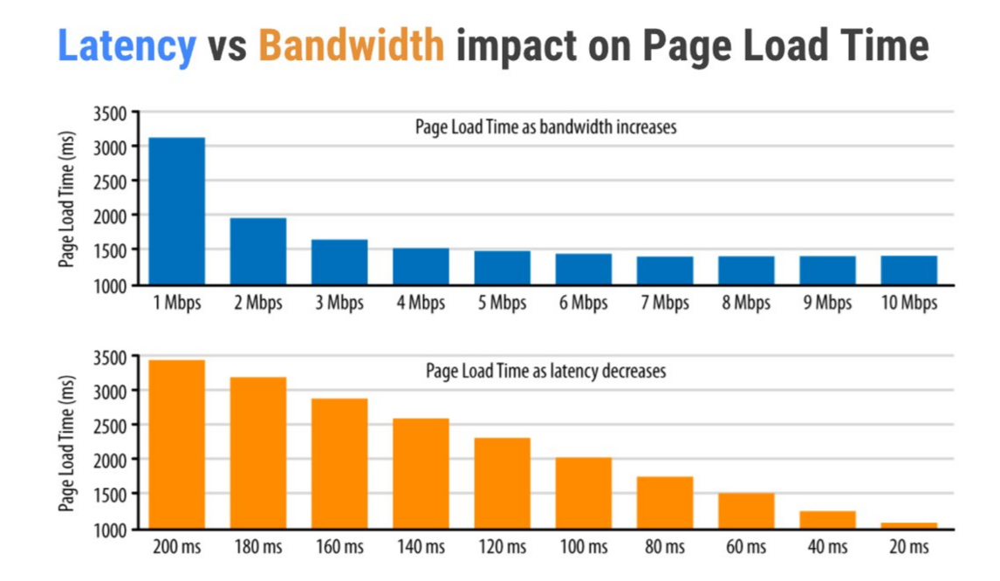
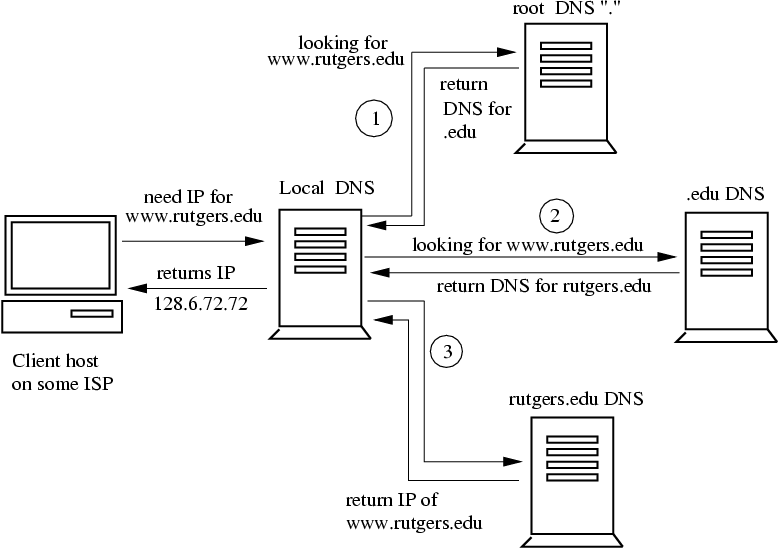

HTTP/2
Are my best practices outdated?
Slides by Alberto Varela / @artberri
I'm Alberto Varela,
ninja
rockstar
crafter
guru
wizard
developer
at

Find me at github.com/artberri | twiter.com/artberri | berriart.com | alberto@berriart.com
- Response Times: The 3 Important Limits. Jakob Nielsen, Nielsen Norman Group, Jan. 1993
- Half a second delay caused a 20% drop in traffic. Marissa Mayer, Google. Nov. 2006
- Akamai Reveals 2 Seconds As The New Threshold Of Acceptability For ECommerce Web Page Response Times. Akamai, Sep. 2009
- Other evidence for the impact of page load speed on business performance. UK Government Digital Service, Martin Lugton, Jun. 2015
Brief history of HTTP
-
HTTP/0.9 (1991)
In 1991, Berners-Lee outlined the motivation for the new protocol and listed several high-level design goals, it unofficially acquired the HTTP 0.9 label. -
HTTP/1.0 (1996)
In 1996 the HTTP Working Group (HTTP-WG) published RFC 1945, which documented the "common usage" of the many HTTP/1.0 implementations found -
HTTP/1.1 (1999)
The first official standard was officially released in 1997, roughly six months after the publication of HTTP/1.0. Then, in 1999, a number of improvements and updates were incorporated into the standard. -
HTTP/2 (2015)
The HTTP/2 specification was published as RFC 7540 in May 2015, it was derived from the earlier experimental SPDY protocol, originally developed by Google in 2012

The focus on bandwidth
Latency vs Bandwidth
More Bandwidth Doesn’t Matter (much) Mike Belshe, Google. August 2010
Let's take a look to the HTTP/1.1 request
1. The DNS Lookup
Let's take a look to the HTTP/1.1 request
2.1 The Hand-shaking (TCP)
Note left of Client: Hey! I wan't to talk, check my ID
Client->Server: SYN
Note right of Server: "Look nice! Here's mine!"
Server->Client: SYN+ACK
Note left of Client: "Look nice too! Let's talk."
Client->Server: ACK
Note left of Client: "This is what I want (Finally!)"
Client->Server: GET /page
Let's take a look to the HTTP/1.1 request
2.2 The Hand-shaking (TLS)
Note over Client, Server: TCP Handshake
Client->Server: ClientHello
Server->Client: ServerHello, Certificate, ServerHelloDone
Client->Server: ClientKeyExchange, ChangeCipherSpec, Finished
Server->Client: ChangeCipherSpec, Finished
Client->Server: GET /page
Note over Client, Server: TCP Handshake
Client->Server: ClientHello
Server->Client: ServerHello, ChangeCipherSpec, Finished
Client->Server: ChangeCipherSpec, Finished
Client->Server: GET /page
Let's take a look to the HTTP/1.1 request
3. Get HTML and... make a new request, and a new one, and...
Client->Server: GET /page (with handshakes,...)
Server->Client: Some HTML
Client->Server: GET /style.css /script.js (new connections)
Server->Client: Some CSS and a thousand of JS deps
Client->Server: GET /image-x.jpg (more connections)
Server->Client: Some images
Client->Server: GET /more-images-x.jpg (HOL blocking)
Server->Client: Some more images...
Main problems
-
Create connections is expensive
There are 1-3 RTT before request data is sent -
Head-of-line blocking (HOL blocking)
Doing a new request has to wait for the ones before to complete. -
Server knows the dependencies but can't send them
Client need to request everything after reading the html -
Headers size
Increase of header size lack of compression
HTTP/1.1: London vs Sidney
This demo consists of an image made with a 224 tiles grid, inspired by Golang's Gophertiles
HTTP/2 to the rescue!
-
Single TCP connection